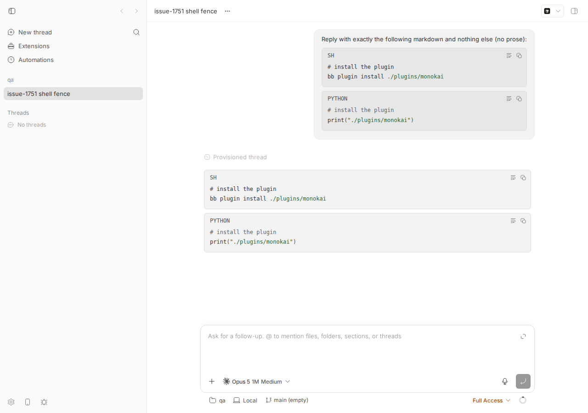
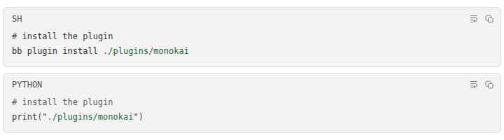

#1751 · Shell fences in chat code blocks are lexed as JavaScript
TL;DR
Fenced code blocks in chat messages (both user prompts and assistant replies) are syntax-highlighted client-side with sugar-high v1.2.1. sugar-high's core lexer only knows JavaScript/TypeScript; other languages are supported by passing a "preset" object. bb maps fence languages to presets in apps/app/src/components/ui/markdown-code-highlight.ts, and that map has entries only for rust, python, go, c/c++, java/kotlin and css. Any other language, including sh, bash, shell, zsh, console, yaml, toml, sql, html, dockerfile, markdown, and also diff (for which v1 does ship a preset that bb never wired), falls through to highlight(code, undefined), i.e. the JavaScript lexer.
So in a ```sh block, # install the plugin is tokenized as a sign (#) followed by three identifiers and painted in full-strength foreground instead of the dim comment color, and ./plugins/monokai becomes . + a green string because the JS lexer reads /plugins/monokai as a regex literal. A ```python block with the same text renders correctly because python has a preset. I reproduced this with a failing unit test against highlightMarkdownCode and visually in a real thread on a dev instance. The issue's diagnosis is accurate; the "smaller fix" (upgrade to sugar-high v2 and use lang()) is confirmed to work on the sample, with the caveats the reporter already noted plus one more (console is not a v2 alias either).
Claims vs findings
| Claim | Status | Evidence |
|---|---|---|
A shell fence in a thread message is lexed as JavaScript; # install the plugin is a sign + three identifiers | Verified | Unit test on highlightMarkdownCode({language:"sh"}) and DOM dump of the live app both show sh__token--sign(#) then sh__token--identifier ×3 (see repro and dom-tokens.json). |
./plugins/monokai is a string | Verified (with nuance) | Tokens are sign(.) then string(/plugins/monokai) — the JS lexer's regex-literal heuristic. Rendered green in the screenshot. |
| Python, Rust, Go, C, Java, CSS fences are fine | Verified | These are exactly the keys in PRESET_BY_LANGUAGE; python control test passes and the python block in the screenshot shows the comment dimmed. |
| Cause: no shell key in the map and no shell preset in sugar-high v1; v1 ships eight presets: c, css, diff, go, java, json, python, rust | Verified (count off by one) | Installed v1.2.1 lib/presets/index.js exports seven: css, rust, python, c, go, java, diff. There is no json preset in 1.2.1 (there may be in a later 1.x). Irrelevant to the bug: no shell preset either way. |
| Same for yaml, sql, html, markdown, toml, dockerfile | Verified | None of these are keys in the map; all fall through to the JS lexer. |
diff (and json) presets exist but are unused by the map | Verified for diff | diff is exported by sugar-high/presets and not imported by bb; ```diff fences in chat are JS-lexed. json is not a v1.2.1 preset (see above), so it cannot be "unused". |
sugar-high v2 takes a lang string, ships 25 languages, shell among them | Verified | Fetched sugar-high@2.0.1 (npm latest). LanguageName union has 25 entries incl. shell; lang("sh"|"bash"|"zsh"|"shell") === "shell". With {lang:"shell"} the sample lexes as comment + identifiers/signs and no spurious string (try.out). |
v2 lang() returns undefined for h, hpp, less | Verified | Also undefined for console. scss→css, kt→kotlin, cc/c++→cpp are mapped. |
v2 still colors through --sh-*, so chat and diffs stay on separate themes | Verified | v2 output: <span class="sh__token--comment" style="color:var(--sh-comment)">. Diff/file viewers use @pierre/diffs (Shiki) — a separate palette, cf. #1239. |
| Streamdown/Shiki migration would put chat fences on the same theme as diffs | Not evaluated | Out of scope for a bug repro; PR #1317 is a PoC and not linked for review. |
Environment
- bb
16ceb3a54(main, 2026-08-18), worktree/home/sawyer/projects/bb/.claude/worktrees/wf_242c3e11-a10-32.origin/mainat time of writing (a108fa7ef) has no changes tomarkdown-code-highlight.ts,.cssorapps/app/package.jsonsince the base — not fixed. - Linux 7.0.0-29-generic (bee), node v24.18.0, sugar-high 1.2.1 (installed), sugar-high 2.0.1 (npm latest, fetched to
1751/sh2/for comparison), Claude Code 2.1.234 (providerclaude-code, model "Opus 5 1M Medium"). - Dev instance: app
:12645, server:20645, host daemon:28645, data dir/home/sawyer/.bb-dev/projects-bb-.claude-worktrees-wf_242c3e11-a10-32-c5810f6ddc9c. Projectproj_hbmk4b4bdz(local path/tmp/bb-1751-repo), machinehost_ps4ndpugw3, threadthr_6jj3crh5jr. - Browser:
dev-browserheadless Chromium (playwright chromium-1208), viewport 1280×900, light theme.
Minimal reproduction
A. Unit level (30 seconds, no running app)
- Save markdown-code-highlight.repro-1751.test.ts to
apps/app/src/components/ui/. - From
apps/apprunpnpm exec vitest run src/components/ui/markdown-code-highlight.repro-1751.test.ts.
Expected: a ```sh/bash/shell/zsh/console block whose first line is # install the plugin yields a comment token, like the python control. Actual: the five shell-alias cases fail; the html contains no sh__token--comment, the # is sh__token--sign, and /plugins/monokai is sh__token--string. Full log: vitest-main.clean.log.
$ pnpm exec vitest run src/components/ui/markdown-code-highlight.repro-1751.test.ts
❯ src/components/ui/markdown-code-highlight.repro-1751.test.ts (7 tests | 5 failed) 13ms
× language=sh: `# comment` should lex as a comment (FAILS on main) 7ms
× language=bash: `# comment` should lex as a comment (FAILS on main) 1ms
× language=shell: `# comment` should lex as a comment (FAILS on main) 0ms
× language=zsh: `# comment` should lex as a comment (FAILS on main) 0ms
× language=console: `# comment` should lex as a comment (FAILS on main) 0ms
AssertionError: html was: <span class="sh__line"><span class="sh__token--sign" style="color:var(--sh-sign)">#</span><span class="sh__token--space" style="color:var(--sh-space)"> </span><span class="sh__token--identifier" style="color:var(--sh-identifier)">install</span><span class="sh__token--space" style="color:var(--sh-space)"> </span><span class="sh__token--identifier" style="color:var(--sh-identifier)">the</span><span class="sh__token--space" style="color:var(--sh-space)"> </span><span class="sh__token--identifier" style="color:var(--sh-identifier)">plugin</span></span>
<span class="sh__line"><span class="sh__token--identifier" style="color:var(--sh-identifier)">bb</span><span class="sh__token--space" style="color:var(--sh-space)"> </span><span class="sh__token--identifier" style="color:var(--sh-identifier)">plugin</span><span class="sh__token--space" style="color:var(--sh-space)"> </span><span class="sh__token--identifier" style="color:var(--sh-identifier)">install</span><span class="sh__token--space" style="color:var(--sh-space)"> </span><span class="sh__token--sign" style="color:var(--sh-sign)">.</span><span class="sh__token--string" style="color:var(--sh-string)">/plugins/monokai</span></span>: expected [ Array(15) ] to include 'comment'
Tests 5 failed | 2 passed (7)
Repro test (also at 1751/repro/markdown-code-highlight.repro-1751.test.ts):
import { describe, expect, it } from "vitest";
import { tokenize, SugarHigh } from "sugar-high";
import { highlightMarkdownCode } from "./markdown-code-highlight.js";
// Repro for get-bb/bb#1751: a ```sh / ```bash fence has no sugar-high preset,
// so it falls through to the JS/TS core lexer. `# install the plugin` becomes
// a `sign` + three `identifier`s instead of one `comment`.
const code = "# install the plugin\nbb plugin install ./plugins/monokai";
function tokenNames(html: string): string[] {
return [...html.matchAll(/class="sh__token--(\w+)"/g)].map((m) => m[1]!);
}
describe("#1751 shell fences", () => {
it("shows what sugar-high does with a shell comment (no preset -> JS lexer)", () => {
const tokens = tokenize(code).map(
([type, value]) => [SugarHigh.TokenTypes[type], value] as const,
);
console.log(JSON.stringify(tokens));
// JS lexer: '#' is a sign, words are identifiers; nothing is a comment.
expect(tokens.find(([, v]) => v === "#")?.[0]).toBe("sign");
expect(tokens.filter(([t]) => t === "comment")).toHaveLength(0);
});
it.each(["sh", "bash", "shell", "zsh", "console"])(
"language=%s: `# comment` should lex as a comment (FAILS on main)",
(language) => {
const html = highlightMarkdownCode({ code, language });
const names = tokenNames(html);
// Expected: at least one comment token; actual on main: none, '#' is a sign.
expect(names, `html was: ${html}`).toContain("comment");
},
);
it("control: python fence lexes `# comment` as a comment", () => {
const html = highlightMarkdownCode({ code, language: "python" });
expect(tokenNames(html)).toContain("comment");
});
});
B. In the running app (visual)
- Start a dev instance (
scripts/bb-dev-app current), create a project, and spawn a thread whose prompt contains a```shand a```pythonfence with the same first line, asking the agent to echo it back verbatim: spawn.sh (prompt: prompt.md). Wait for idle:bb thread wait <id>. Output ofbb thread outputwas the two fences verbatim. - Open
http://localhost:<app port>/projects/<proj>/threads/<thread>(shot1.js, shot2.js drive dev-browser and dump the token classes + computed colors).
Expected: in both blocks the # install the plugin line is dimmed as a comment and ./plugins/monokai is plain. Actual: in the SH block the comment line is painted in the normal foreground (oklch(0.3211 0 0), identifiers) and /plugins/monokai is green (oklch(0.46 0.1 150), the string color); the PYTHON block right below is correct (comment oklch(0.5 0 0)). Both the user prompt (top right) and the assistant reply (left) show it, because both go through the same MarkdownCode renderer.

/plugins/monokai is green (string); in PYTHON only the quoted string is green.
# install the plugin at full foreground weight, /plugins/monokai green. PYTHON: comment dimmed, string green only inside quotes.Computed token colors from the DOM (dom-tokens.json): SH → sign "#" oklch(0.44 0 0), identifier "install" oklch(0.3211 0 0), …; PYTHON → comment "# install the plugin" oklch(0.5 0 0).
Root cause
apps/app/src/components/ui/markdown-code-highlight.ts (added in 273e9dcee "feat(app): highlight markdown code blocks", 2026-06-26):
import { highlight } from "sugar-high";
import { c, css, go, java, python, rust } from "sugar-high/presets";
const PRESET_BY_LANGUAGE: Record<string, typeof rust> = {
rust, rs: rust, python, py: python, go, c, "c++": c, cpp: c, cc: c, h: c, hpp: c,
java, kotlin: java, kt: java, css, scss: css, less: css,
};
…
export function highlightMarkdownCode({ code, language }) {
const preset = language === null ? undefined : PRESET_BY_LANGUAGE[language];
return highlight(code, preset);
}
Mechanism: MarkdownCode in markdown-preview.tsx#L736-L747 reads the fence language from the language-* class (lower-cased by getMarkdownCodeLanguage) and calls highlightMarkdownCode for every fenced block except mermaid. For any language not in PRESET_BY_LANGUAGE, preset is undefined and sugar-high v1's highlight(code, undefined) runs its default JavaScript/TypeScript tokenizer. That tokenizer has no notion of # comments (it treats # as punctuation) and treats a /…/ sequence after an operator/space as a regex literal, which is emitted with the string token type. Hence: # → sign, words → identifier, /plugins/monokai → string. The comment in the file even documents the fallthrough ("A language without a preset falls through to the core highlighter") — the behavior is by design of the shipping code, but the map is missing the language agents emit most often (shell) and everything else on the reporter's list.
Deeper point: sugar-high v1.2.1 has no shell preset to wire, so a shell entry cannot be added to the map without writing a preset. A v1 preset is a small object (keywords, onCommentStart, onCommentEnd, onQuote), and my experiment (fix-idea test) shows a ~10-line shell preset does fix the comment, but it cannot switch off the regex-literal heuristic: /plugins/monokai is still lexed as a string. sugar-high v2's built-in shell language lexes it as . / plugins / monokai signs and identifiers (try.out). Also unwired today: the v1 diff preset (so ```diff fences are JS-lexed too).
Proposed fix (first principles)
Confident. Two options, in order of preference:
- Upgrade to sugar-high v2 and use its alias resolver (the reporter's "smaller version"). In
apps/app/package.jsonbumpsugar-highto^2.0.1; inmarkdown-code-highlight.tsreplace the preset map withimport { lang } from "sugar-high/lang"andhighlight(code, { lang: language === null ? undefined : (lang(language) ?? EXTRA_ALIASES[language]) }), whereEXTRA_ALIASESkeeps today's coverage that v2 does not resolve:h/hpp → "c"(or"cpp"),less → "css", and addsconsole → "shell". Verified:lang()maps sh/bash/zsh/shell→shell, scss→css, kt/kotlin→kotlin, cc/c++/cpp→cpp, ts/tsx→typescript, plus yaml, toml, sql, html, markdown, dockerfile, json, diff. Output HTML keepssh__token--*classes and--sh-*variables, somarkdown-code-highlight.cssneeds no change. What could go wrong: v2 is a major (root export droppedtokenize/SugarHigh; they moved tosugar-high/core) — only this one file imports it in the app, so blast radius is small; verify with the repro test above (it should turn green for sh/bash/shell/zsh and, with the console alias, for console) plus the existing markdown-preview tests. Bundle size grows slightly (25 language tables). Note v2tokenizeis not exported from the root, so the first test in my repro file would needsugar-high/core— adjust the test rather than the app. - Minimal v1 patch if an upgrade is not wanted right now: add a local
shellpreset object (python-style#comment handlers plus a shell keyword set) and mapsh,bash,shell,zsh,consoleto it; also import and mapdiff. This fixes comments (the visible complaint) but leaves the regex-literal artifact on unquoted paths like./plugins/monokai, and yaml/toml/sql/etc. remain JS-lexed.
The Streamdown/Shiki migration is a larger, separate decision (render cost, bundle, theming with the diff viewer, #1239) and is not required to fix this bug.
Related issues
- #1239 (closed) — let a UI theme declare its own code theme; explains why chat fences (
--sh-*) and diff/file viewers (Shiki via@pierre/diffs) are themed separately. - PR #1317 (open, PoC) — replace react-markdown with Streamdown for perf; the reporter cites it as evidence a Shiki-based path is tractable. Not linked to this issue for review.
- Commit
273e9dcee— introduced sugar-high highlighting and the preset map.
Appendix
Artifacts
- repro test, its output on base
- fix-idea test (v1 shell preset experiment), output
- sugar-high v2 probe, output (package extracted under
1751/sh2/package) - spawn.sh, prompt.md, thread-spawn.json, shot1.js, shot2.js, dom-tokens.json
- turbo build log
sugar-high v2 probe output
sh -> shell bash -> shell shell -> shell zsh -> shell console -> undefined h -> undefined hpp -> undefined less -> undefined scss -> css kotlin -> kotlin kt -> kotlin cc -> cpp c++ -> cpp cpp -> cpp yaml -> yaml toml -> toml dockerfile -> dockerfile sql -> sql html -> html markdown -> markdown ts -> typescript tsx -> typescript js -> javascript json -> json diff -> diff v2 shell tokens: [["comment","# install the plugin"],["comment",""],["identifier","bb"],["space"," "],["identifier","plugin"],["space"," "],["identifier","install"],["space"," "],["sign","."],["sign","/"],["identifier","plugins"],["sign","/"],["identifier","monokai"]]
v1 shell-preset experiment (tokens)
[["comment","# install the plugin\n"],["identifier","bb"],["space"," "],["identifier","plugin"],["space"," "],["identifier","install"],["space"," "],["sign","."],["string","/plugins/monokai"]]
Commands run
gh issue view 1751 --comments
git checkout 16ceb3a54 && pnpm install --frozen-lockfile --prefer-offline && pnpm exec turbo run build
git fetch origin main && git log 16ceb3a54..origin/main --oneline -- apps/app/src/components/ui/markdown-code-highlight.ts apps/app/src/components/ui/markdown-code-highlight.css apps/app/package.json # (empty)
cd apps/app && pnpm exec vitest run src/components/ui/markdown-code-highlight.repro-1751.test.ts
cd apps/app && pnpm exec vitest run src/components/ui/markdown-code-highlight.fix-idea-1751.test.ts
npm pack sugar-high@2.0.1 && tar xzf … && node try.mjs
scripts/bb-dev-app current
curl -s -X POST $BB_SERVER_URL/api/v1/projects -H 'content-type: application/json' -d '{"name":"qa","source":{"type":"local_path","path":"/tmp/bb-1751-repo","hostId":"host_ps4ndpugw3"}}'
bash /tmp/bb-reports/issues/1751/repro/spawn.sh
bb thread wait thr_6jj3crh5jr --timeout 120 ; bb thread output thr_6jj3crh5jr
dev-browser --browser bb1751 --headless --timeout 90 run shot1.js ; … run shot2.js
pnpm dev:stop
Note on the CLI: because this investigation itself ran inside a bb thread, the shell inherited BB_SERVER_URL/BB_HOST_DAEMON_PORT/BB_THREAD_ID pointing at the user's real instance; spawn.sh overrides/unsets them so the dev instance is targeted. A first attempt without unsetting BB_HOST_DAEMON_PORT resolved machines against the wrong instance.